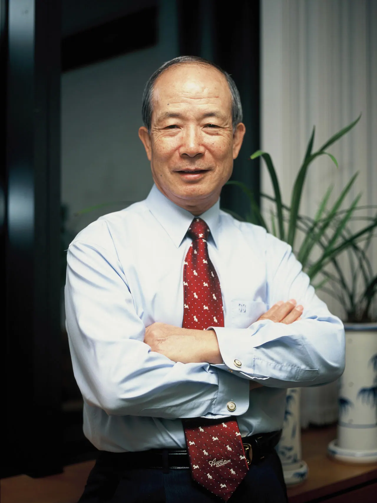

공사 30년의 발자취
탭으로 자료 종류를 고르고, 사진은 연대로 걸러 볼 수 있습니다. 누르면 크게 보거나 바로 재생합니다.
사사(社史) E-BOOK
10년·20년·30년 동안 발간된 사사를 이북으로 읽을 수 있습니다. 원본 사이트에서 열립니다.
2006
예금보험공사 10년사
2016
예금보험공사 20년사
2026
예금보험공사 30년사
처음으로
메인 화면

탭으로 자료 종류를 고르고, 사진은 연대로 걸러 볼 수 있습니다. 누르면 크게 보거나 바로 재생합니다.
10년·20년·30년 동안 발간된 사사를 이북으로 읽을 수 있습니다. 원본 사이트에서 열립니다.
2006
2016
2026
처음으로
메인 화면